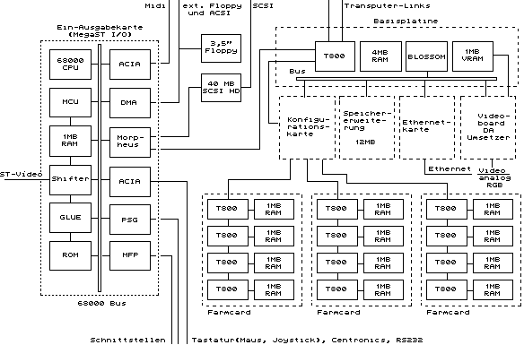

Previous
Next
TOC
Prozessor:
INMOS T800 Transputer mit 20 MHz (externer Takt 5 MHz)
I/O Board:
Neudesigntes MegaST Mainboard mit
1MB Ram
Ohne Blitterchip aber mit SCSI Controller
L5380LP-2
und Ansteuerlogikchip Morpheus on Board
RAM:
4MB (70ns) erweiterbar auf 16MB Hauptspeicher mit 4
Megabit RAMchips auf bis zu 64 Megabyte erweiterbar
1MB (100ns) Dual Port-Video-RAM (Farbblitter
BLOSSOM)
Massenspeicher: DD-Floppy, 20/40/80/100/150 Megabyte große Harddisk
Tastatur:
Mega ST Tastatur mit 96 Tasten
Monitor:
Analog RGB
Grafikmodi:
1280 x 960
4 Bit (16 Farben oder Monochrom)
1024 x 768
8 Bit (256 Farben)
640 x 480
8 Bit (256 Farben)
512 x 480 32 Bit (True Color)
Schnittstellen:
SCSI,
ACSI DMA,
Midi In,
Midi Out,
RS232 (Modem 1),
Centronics,
Maus/
Joystick,
DD-Floppy, Ethernet
(sofern Steckkarte vorhanden), Diagnosekarte
Erweiterungen:
4 20 MHz-INMOS-Links für 12 weitere Transputer mit
je 1 MB RAM, 32-Bit-Video-Erweiterungsbus
Peripherie:
Laserdrucker, CD-ROM
Betriebssystem: Helios, XWindows
Farmcard:
4 T800 Transputer mit je 1 MB eigenem Hauptspeicher
Das Blockdiagramm der ATW800 und dem (
I/O SUBSYSTEM)

Kapitel Das Innenleben der ATW800, Seite 3